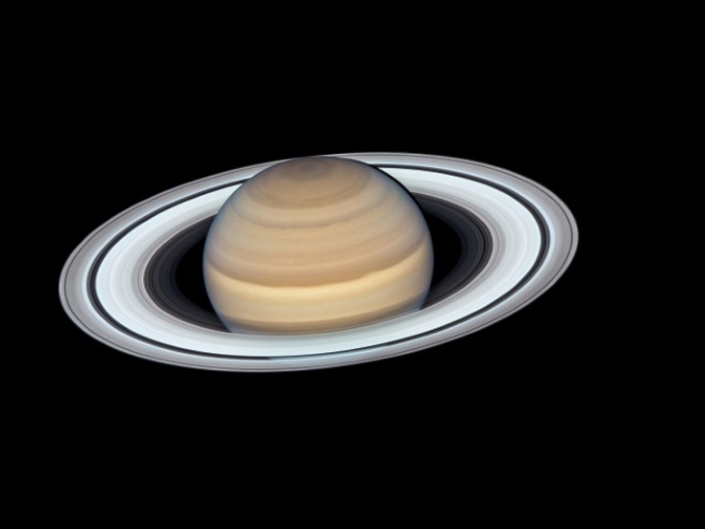
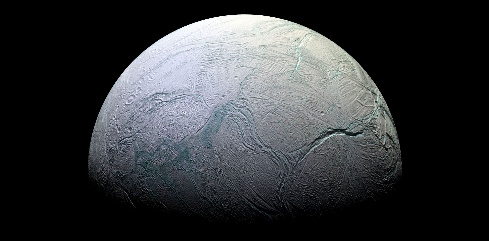
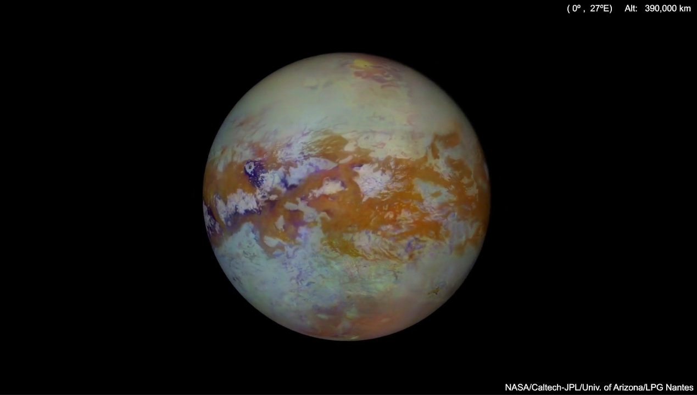

Saturne
Description
Saturne est la sixième planète du Système solaire par ordre d'éloignement au Soleil, et la deuxième plus grande par la taille et la masse après Jupiter, qui est comme elle une planète géante gazeuse. Son rayon moyen de 58 232 km est environ neuf fois et demi celui de la Terre et sa masse de 568,46 × 1024 kg est 95 fois plus grande. Orbitant en moyenne à environ 1,4 milliard de kilomètres du Soleil (9,5 unités astronomiques), sa période de révolution vaut un peu moins de 30 années tandis que sa période de rotation est estimée à 10 h 33 min. La caractéristique la plus célèbre de la planète est son système d'anneaux proéminent. Composés principalement de particules de glace et de poussières, ils sont observés pour la première fois en 1610 par Galilée et se seraient formés il y a moins de 100 millions d'années. Saturne est la planète possédant le plus grand nombre de satellites naturels avec 82 confirmés et des centaines de satellites mineurs dans son cortège. Sa plus grande lune, Titan, est la deuxième plus grande du Système solaire (derrière Ganymède, lune de Jupiter, toutes deux avec un diamètre plus grand que celui de Mercure) et c'est la seule lune connue à posséder une atmosphère substantielle. Une autre lune remarquable, Encelade, émet de puissants geysers de glace et serait un habitat potentiel pour la vie microbienne. L'intérieur de Saturne est très probablement composé d'un noyau rocheux de silicates et de fer entouré de couches constituées en volume à 96 % d'hydrogène qui est successivement métallique puis liquide puis gazeux, mêlé à de l'hélium. Ainsi, elle ne possède pas de surface solide et est la planète ayant la densité moyenne la plus faible avec 0,69 g/cm3 — soit 70 % de celle de l'eau. Un courant électrique dans la couche d'hydrogène métallique donne naissance à sa magnétosphère, la deuxième plus grande du Système solaire mais beaucoup plus petite que celle de Jupiter. L'atmosphère de Saturne est généralement terne et manque de contraste, bien que des caractéristiques de longue durée puissent apparaître comme un hexagone à son pôle nord. Les vents sur Saturne peuvent atteindre une vitesse de 1 800 km/h, soit les deuxièmes plus rapides du Système solaire après ceux de Neptune. Elle a été explorée par quatre sondes spatiales : Pioneer 11, Voyager 1 et 2 puis Cassini-Huygens (du nom de deux astronomes ayant grandement fait avancer les connaissances sur le système saturnien au xviie siècle).
Atmosphére
La haute atmosphère de Saturne est constituée à 96,3 % d'hydrogène et à 3,25 % d'hélium en volume2. Cette proportion d'hélium est significativement plus faible que l'abondance de cet élément dans le Soleil. La quantité d'éléments plus lourds que l'hélium (appelée métallicité) n'est pas connue avec précision, mais les proportions sont supposées correspondre aux abondances primordiales issues de la formation du Système solaire ; la masse totale de ces éléments est estimée à 19 à 31 fois celle de la Terre, une fraction significative étant située dans la région du noyau de Saturne25. Des traces de méthane CH4, d'éthane C2H6, d'ammoniac NH3, d'acétylène C2H2 et de phosphine PH3 ont également été détectées2,26,27. Le rayonnement ultraviolet du Soleil provoque une photolyse du méthane dans la haute atmosphère, conduisant à la production d'hydrocarbures, les produits résultants étant transportés vers le bas par les tourbillons de turbulence et par diffusion28. Ce cycle photochimique est modulé par le cycle saisonnier de Saturne.
Magnetosphere
Saturne possède un champ magnétique intrinsèque qui a une forme simple et se comporte comme un dipôle magnétique, presque aligné avec l'axe de rotation de la planète et dont le pôle nord magnétique correspond au pôle sud géographique2,67. Il est découvert en 1979 par la sonde Pioneer 11 lorsqu'elle mesure son intensité : sa force à l'équateur est d'environ 0,2 Gauss (20 µT), soit un vingtième du champ de Jupiter et légèrement plus faible que le champ magnétique terrestre68,69,70. En conséquence, la magnétosphère de Saturne — cavité créée dans le vent solaire par le champ magnétique de la planète — est la deuxième plus grande du Système solaire mais reste beaucoup plus petite que celle de Jupiter67. La magnétopause, frontière entre la magnétosphère de Saturne et le vent solaire, se trouve à seulement environ vingt fois le rayon de Saturne (soit 1 200 000 km) du centre de la planète, tandis que la queue magnétique s'étire derrière sur des centaines de fois le rayon saturnien Très probablement, le champ magnétique est généré de la même manière que celui de Jupiter avec des courants de convection dans la couche d'hydrogène métallique liquide créant un effet dynamo67,71. Cette magnétosphère est efficace pour détourner les particules du vent solaire67. L’interaction de la magnétosphère de Saturne et des vents solaires, comme dans le cas de la Terre, produit des aurores boréales sur les pôles de la planète dans le domaine du visible, de l’infrarouge et de l’ultraviolet66,72. La magnétosphère de Saturne est remplie de plasma originaire de la planète et de ses satellites naturels, notamment d'Encelade qui éjecte jusqu’à 600 kg/s de vapeur d’eau par ses geysers situés à son pôle sud73 ou de l'atmosphère de Titan dont les particules ionisées interagissent avec la magnétosphère68. Par ailleurs, il se trouve à l’intérieur de la magnétosphère une ceinture de radiation, similaire à la ceinture de Van Allen pour la Terre, qui contient des particules d’énergie pouvant atteindre la dizaine de mégaélectronvolts
Encelade
Encelade (S II Enceladus) est un satellite naturel de Saturne, découvert par William Herschel en 1789. Il s'agit du sixième satellite de Saturne par la taille et du quatorzième par son éloignement. Depuis la mission Voyager 2, et surtout la mission Cassini-Huygens, arrivée en orbite saturnienne en 2004, Encelade est réputé pour posséder plusieurs caractéristiques étonnantes, dont une géologie très complexe jusque-là insoupçonnée, et une activité qui reste toujours actuellement difficile à expliquer, pour un corps de si petite taille (500 km de diamètre en moyenne). La sonde Cassini a d'ailleurs observé à sa surface des jets de matière qui pourraient être semblables à des geysers composés « d'une sorte d'eau carbonique mélangée à une essence de gaz naturel7 », et qui semblent indiquer la présence d'eau liquide sous la surface. De récentes observations ont permis de confirmer cette hypothèse, en démontrant la présence d'un océan d'eau liquide sous sa surface. Les trois ingrédients de la vie (chaleur, eau, molécules organiques) seraient donc potentiellement présents sur Encelade8. Selon les images de la sonde Cassini, Encelade est recouvert d'une couche aux reflets bleutés, caractéristique de la neige d'eau fraîche. La neige serait épaisse d'une centaine de mètres, ce qui indique qu'il neige sur Encelade depuis au moins 100 millions d'années. Les geysers, et la source de chaleur souterraine qui les alimente, seraient donc actifs depuis très longtemps. Encelade tourne autour de Saturne au sein de l'anneau le plus externe et le plus ténu de tous, appelé anneau E ; cet anneau serait alimenté en permanence en particules par les « éruptions volcaniques » actuelles (ou récentes) d'Encelade. Ce satellite est l'un des quatre seuls objets du Système solaire (avec le satellite de Jupiter, Io, celui de Neptune, Triton, et bien sûr la Terre) sur lesquels des éruptions ou des éjections de matière ont pu être directement observées. Est-ce que cette page s’est affichée suffisamment rapidement ? OuiNonPas certain Pour davantage d’informations, consultez la déclaration de confidentialité de ce sondage.
titan
Titan, aussi appelé Saturne VI, est le plus grand satellite naturel de Saturne. D'un diamètre 6 % plus grand que celui de Mercure, Titan est par la taille au deuxième rang des satellites du Système solaire, après Ganymède, le plus gros satellite de Jupiter. Il s’agit du seul satellite connu à posséder une atmosphère dense. Découvert par l’astronome néerlandais Christian Huygens en 1655, Titan est la première lune observée autour de Saturne7. Titan est principalement composé de roche et d’eau gelée. Son épaisse atmosphère a longtemps empêché l’observation de sa surface, jusqu’à l’arrivée de la mission Cassini-Huygens en 2004. Cette dernière a permis la découverte de lacs d’hydrocarbures liquides dans les régions polaires du satellite. Du point de vue géologique, la surface de Titan est jeune ; quelques montagnes ainsi que des cryovolcans éventuels y sont répertoriés, mais cette surface demeure relativement plate et lisse, présentant peu de cratères d’impact. L’atmosphère de Titan est composée à 98,4 % de diazote et à 1,6 % de méthane et d’éthane. Le climat — qui comprend des vents et de la pluie de méthane — crée sur la surface des caractéristiques similaires à celles rencontrées sur Terre, telles que des dunes et des côtes. Comme la Terre, Titan présente des saisons. Par ses liquides (à la fois à la surface et sous la surface) et son épaisse atmosphère de diazote, Titan est perçu comme un analogue de la Terre primitive, mais à une température beaucoup plus basse. Le satellite est cité comme pouvant peut-être héberger de la vie extraterrestre microbienne ou, au moins, comme un milieu naturel prébiotique riche en chimie organique complexe. Certains chercheurs suggèrent ainsi qu’un océan souterrain pourrait probablement servir d’environnement favorable à la vie.
| masse | graviter | duree rotation | satellites | revolution | saturne | 5,683 × 10^26 kg | 10,44 m/s² | 0j 10h 34m | 82 | 29,5 ans | Encelade | 8,6 × 1019 kg | 0,113 m/s² | 32 h 53 min | 0 | 1,370 jour | Titan | 1,345 2 ± 0,000 2) × 1023 kg | 1,352 m/s2 | 15 jours et 22 heures | 0 | 15,95 |
|---|